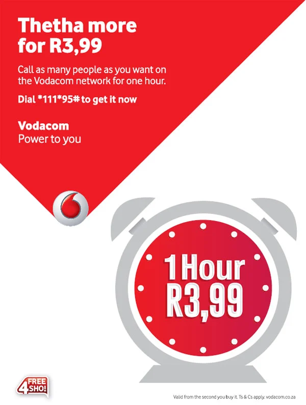
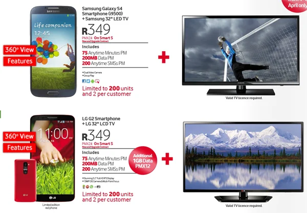
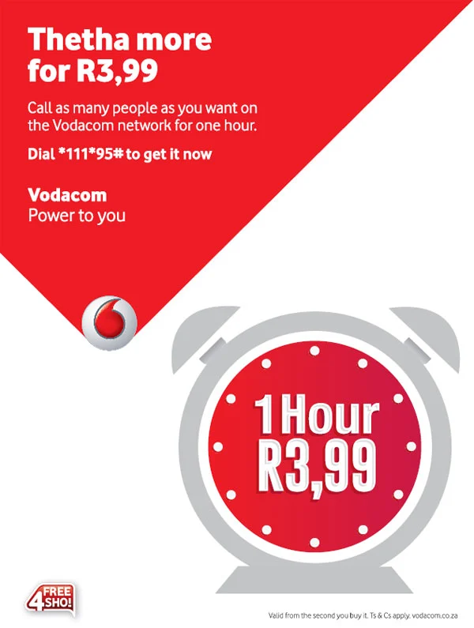
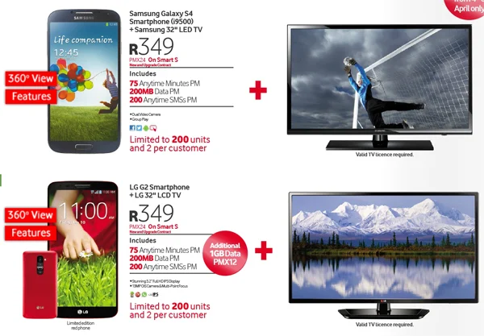

VODACOM STORE
Vodacom Group Limited (operating as Vodacom) is a South African mobile communications company, providing voice, messaging, data and converged services to over 55 million customers. From its roots in South Africa, Vodacom has grown its operations to include networks in Tanzania, the Democratic Republic of the Congo, Mozambique, and Lesotho, and provides business services to customers in over 32 African countries, including Nigeria, Zambia, Angola, Kenya, Ghana, Côte d'Ivoire, and Cameroon.[1] It was owned in a 50/50 partnership by the South African telecommunications giant Telkom and British multinational operator Vodafone.[3] On 6 November 2008, Vodafone announced that it had agreed to increase its stake to 64.5%, and Telkom said that it would spin off its remaining holding by listing it on the Johannesburg Stock Exchange (JSE).[1][4] On April 1 2011, Vodacom officially unveiled its new change in branding from blue to red, using the same style as its parent company, Vodafone.[5] Vodacom provides coverage to Mount Kilimanjaro, which was the highest point in the world to be covered by GSM, until Axiata (through its subsidiary Ncell) provided coverage at the top of Mount Everest, the highest point in the world. Vodacom was aided by its optimistic advertisements at the early stages of the democratic South Africa, including the yebo gogo campaign which is still in effect today in Africa. Vodacom is the leading cellular network in South Africa with an estimated market share of 58% and more than 103 million customers across Africa.[6]
STORE HOURS
MONDAY: 8:00 AM - 10:00 PM
TUESDAY: 8:00 AM - 10:00 PM
WEDNESDAY: 8:00 AM - 8:00 PM
THURSDAY: 8:00 AM - 8:00 PM
FRIDAY: 8:00 AM - 10:00 PM
SATURDAY: 8:00 AM - 10:00 PM
SUNDAY: 7:00 AM - 00:00 PM
SPECIALS.png) 



.jpg)